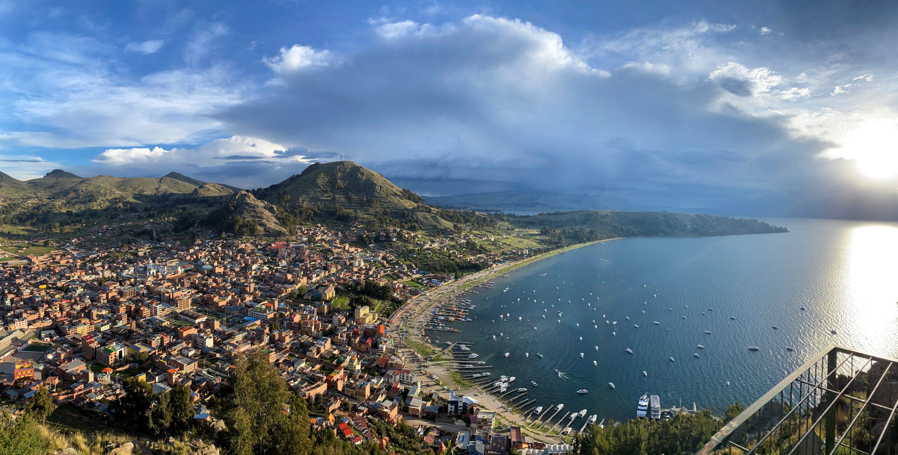
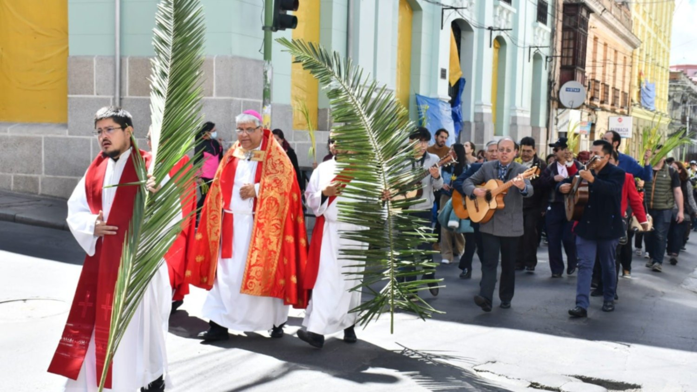

Turismo en Semana Santa en Bolivia
Destinos Turísticos
Descubre lugares emblemáticos de Bolivia durante Semana Santa, donde la tradición religiosa se funde con la belleza natural y el patrimonio cultural.

Actividades Culturales
Durante esta celebración se organizan ferias, conciertos de música sacra y representaciones que muestran la rica herencia cultural de cada región.

Recomendaciones de Viaje
Planifica tu visita reservando alojamiento y transporte con antelación. Infórmate sobre eventos locales y disfruta de la hospitalidad boliviana durante esta festividad.
